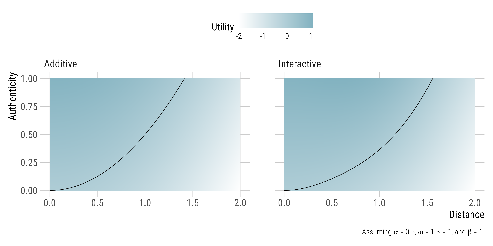
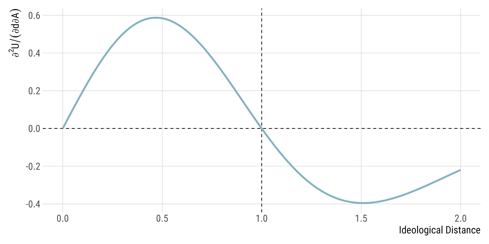

Ideological Moderation and The Vibe
The customary Democratic moderation debate is once again playing out in The Discourse.
Every few months we discuss the electoral returns to ideological moderation and people seem to like it. I can be honest and say it is the best hobby for us political junkies.
At the same time, there has been a parallel—somewhat goofy—conversation about Vibes: how things like authenticity, credibility, and being “the real deal” shape voter perceptions. There is a distinct feeling that people who are on the side of moderation advocate for a sense of pop-Downsian issue positioning, while people who are on the side of Vibes advocate for candidates who are seen as credible and authentic. I always feel rather torn in this debate, because, obviously, fundamentally, both things are probably correct when it comes to political discourse.
Watching these play out made me think more about how we should connect these two questions (ideology and vibes) together. Since the Vibe is actually pretty ambiguous, it is hard to theorize about it, particularly as something different than “candidate traits” political scientists talk about. But the more I think about this, the more I believe that authenticity should not work as a separate dimension of candidate appeal; instead, it may reshape how ideology is perceived in the first place.
I think about this using a toy model of candidate utility for voters. I believe it has some insights.
A Toy Model of Distance x Vibes
Let voter i have an ideal point \pi_i and candidate c position at \phi_c with distance d = |\pi_i - \phi_c|. Assume that the candidate has an exogenous trait of “Good Vibes,” defined as V \in [0, 1].
In a classic Downsian setting with trait effects, we can write this model simply as
\begin{aligned} U_i &= -\alpha (|\pi_i - \phi_c|^2) + \beta V \\ & = -\alpha d^2 + \beta V \end{aligned} \tag{1}
where \alpha > 0 is a baseline parameter that regulates disutility from ideological distance, and \beta is the additive affective warmth for the candidate—the utility of c being “the real deal.”
This model provides simple and well-documented implications for electoral choice, where rational voters try to maximize their utility by assessing the relative contributions from ideological distance and candidate traits in an additive fashion. While ideological distance in general decreases the utility from candidate c, one can still choose the candidate based on some other traits.
Yet, what if the Good Vibes may moderate the effects of ideological distance as well?
It is plausible that Good Vibe candidates may dampen ideological distance by cultivating a rapport that makes them affectively closer to the voter even though the voter has certain disagreements with the candidate. Similarly, it’s also possible that Good Vibes, as it increases credibility, can steepen that very ideological distance: voters who are far away from the candidate see the threat as it is.
Let me revise the utility function to reflect this possibility. To do so, I will introduce “a Good Vibes and distance interaction” that captures this conditional effect:
\text{Interaction Term} = \omega V d^2 e^{-(\frac{d}{\gamma})^2} \text{ where } \omega > 0 \tag{2}
What’s going on here? The exponential term e^{-(\frac{d}{\gamma})^2} creates a “sweet spot” where vibes can matter the most. When you are very close to the candidate ideologically (when d is small), you already kinda like them. When you are very far away (when d is high), you already dislike the candidate (and this exponential term makes sure that vibes can’t really overcome fundamental disagreement). But in the middle range—when voters have some disagreements—the Good Vibes can matter.
The \omega parameter controls how much vibes reshape the distance penalty overall, while \gamma sets the scale of distance where this really matters. Put differently, \gamma here regulates what counts as moderate and what counts as extreme disagreement in the political context we are operating.
This is a weird thing to do, but there is a reason for that. A simple multiplicative interaction would suggest that vibes matter equally whether you’re slightly or extremely distant from a candidate; that does not match our intuition if you ask me. In reality, there’s probably a tipping point: at moderate distances, Good Vibes can bridge disagreements and make policy differences feel less threatening. But once you’re ideologically opposed enough, no amount of authenticity will convince you; in fact, it might make things worse by making the candidate’s opposing views feel more credible and salient. The exponential decay term captures this non-monotonic relationship: vibes have their biggest effect in a middle range of disagreement, fading in importance at both extreme polarities.
With this addition, the new utility function becomes
U_i = -\alpha d^2 + \beta V + \omega V d^2 e^{-(\frac{d}{\gamma})^2} \tag{3}
What Happens to Utility with this Weird Model?
Now, what happens when ideological distance and authenticity change? To understand these effects, we need to look at the mixed partial derivative with respect to d and V:
\frac{\partial^2 U}{\partial d \partial V} = 2 \omega d (1 - \frac{d^2}{\gamma^2}) e^{-(d/\gamma)^2} \tag{4}
With \omega > 0, the situations where 0 < d < \gamma result in the compensation effect: authenticity flattens the distance penalty, and the weight on policy disagreement falls. But when d > \gamma, the sign switches, generating the amplification effect: authentic candidates push distant voters away because they are credible threats. Therefore, compensation and amplification depend on ideological distance.
I visualize these dynamics in Figures 1 and 2.
Figure 1 presents the utility space when the relation between ideological distance d and Good Vibes V is additive (the left panel, Equation 1) or interactive (the right panel, Equation 3).
 |
|---|
| Figure 1 |
Figure 2 visualizes the dynamics of compensation and amplification, representing the partial effect of Good Vibes on utility across different values of ideological distance.
 |
|---|
| Figure 2 |
This was a fun exercise!
These days I am reading the Hinich and Munger (1998) book on ideological choice, and I am pretty sure there is a fun exercise to use their choice model in a context like this.